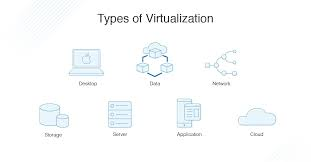
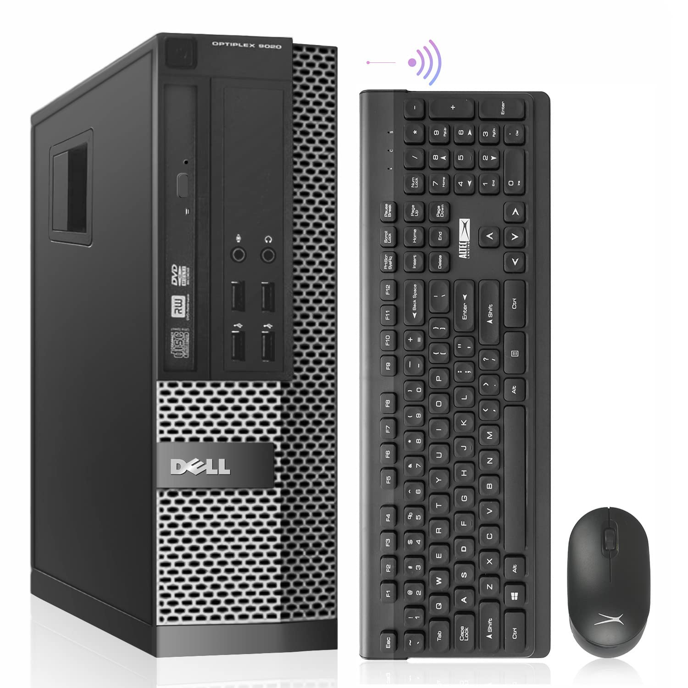
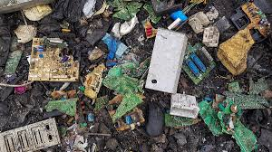

28.12.2024.
Virtualizacija servera
Virtualizacija smanjuje potrebu za fizičkim hardverom i štedi energiju.
Pročitaj višeNajnovije vijesti iz svijeta održivosti

Virtualizacija smanjuje potrebu za fizičkim hardverom i štedi energiju.
Pročitaj više
Korištenje obnovljene opreme ključ je kružnog gospodarstva u IT-u.
Pročitaj više
Kako pravilno zbrinuti stare uređaje i izbjeći zagađenje?
Pročitaj više